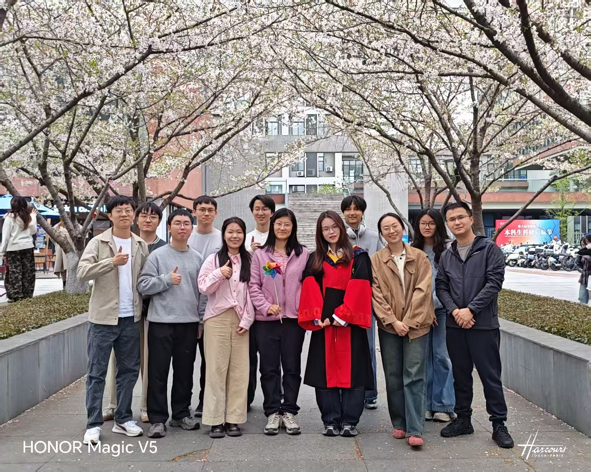

Brain and Brain-Inspired Computing (BBIC) Lab

Welcome!
We are a research group at the Center for Brain and Brain-Machine Integration Frontiers, Zhejiang University, under the supervision of Yu Qi (祁玉).
Our current research interests include:
- Brain computer interface
- Neural decoding
- Artificial intelligence
- Machine learning
We welcome students and researchers interested in these directions. See our opportunities for more information.
Recent Research
Our research on the neural encoding of handwriting was featured on the June 2025 cover of Nature Human Behaviour.

More research: Publications.